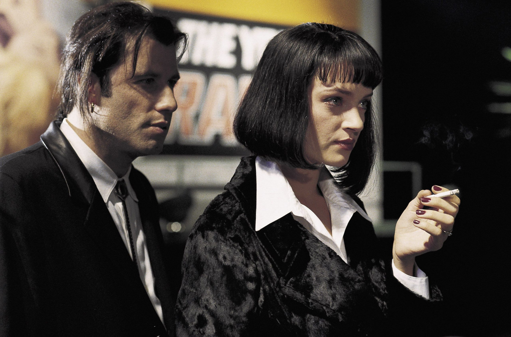

Uno de los más grandes cineastas de la contemporaneidad sin duda lo es Quentin Tarantino, con su estilo único y particular, lleno de humor negro y satírico, eleva la forma de hacer cine, llevándonos desde sus inicios a un despertar de sensaciones y emocionalidad que hace ver en detalle la psicología de cada personaje tan genialmente manejada.
Luego de exhibir su primera película larga independiente Reservoir Dogs en 1992, dejó al público con ansías de más, incluso los críticos la catalogaban como la mejor película independiente, y con gran razón la describen así, pues la escena máster inicial en el restaurant en la que va presentando cada personaje, mostró sin timidez su concepto y su forma de contar una historia tan brillantemente; la escena es tan enriquecedora y maravillosa, que ya por sí sola podría ser un cortometraje, sin duda ya se veía venir su chispa, su característica y simbología discursiva tan amplia.

Antes de Reservoir Dog hizo algunos cortometrajes y otros audiovisuales, pero fue a partir de este largometraje que se pudo conocer aún más de Tarantino, a partir de allí el discurso y la cinematografía de sus películas fueron in crescendo, hasta obtener varios Oscars, Palma de Oro y tantos otro premios importantes, como por ejemplo con su siguiente film Pulp Fiction, en el que disipo cualquier duda que existiera sobre su talento y concepto cinematográfico, mostrando que se puede ser director, productor, actor, escritor y dar el mil por ciento en cada rol, en esta película pudo contar con un elenco y un equipo de producción más que cohesionado; Pulp Fictión una joya, se convierte en una clase magistral para estudiantes de cine, un deleite para cinéfilos y público en general.
A esta realización artística de su cinematografía le siguió el film Jackie Brown, en el año 1997, y en Kill Bill vol 1 y 2 (2003 y 2004) hizo lo que quiso y dejó cada vez más clara su forma de arte y expresión, tres años después nos trajo Death Proof con el género acción y suspenso, y en 2009 debutó con el cine bélico de Inglourious Basterds que le valió nominaciones al Oscars, Globo de Oro, Cannes y BAFTA.
En 2012 nos regala Django Unchained (wéstern) convirtiéndose en merecedor de varios premios importantes como mejor Guion Original en los Oscars, Globo de Oro y BAFTA. En 2015 continúa con el cine wéstern en su película The Hateful Eight, siempre con su particular forma conceptual nos da un paseo profundo por cada género del cine, que al mismo tiempo convierte en un solo género, el de Tarantino. En su última película estrenada en 2019 Once Upon a Time in Hollywood le hace un homenaje al cine western, inspirándose en personajes reales y momentos vividos en una época de Los Ángeles tan acontecida.
Esperamos revelaciones próximas de su nuevo proyecto o de su décima película, que aunque aún no se sabe nada, es seguro que no decepcionará a su público.